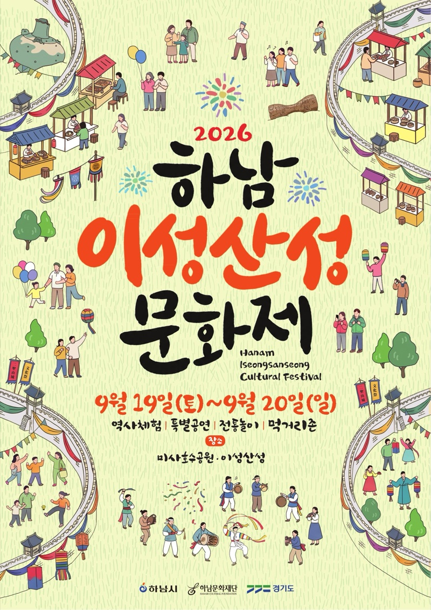
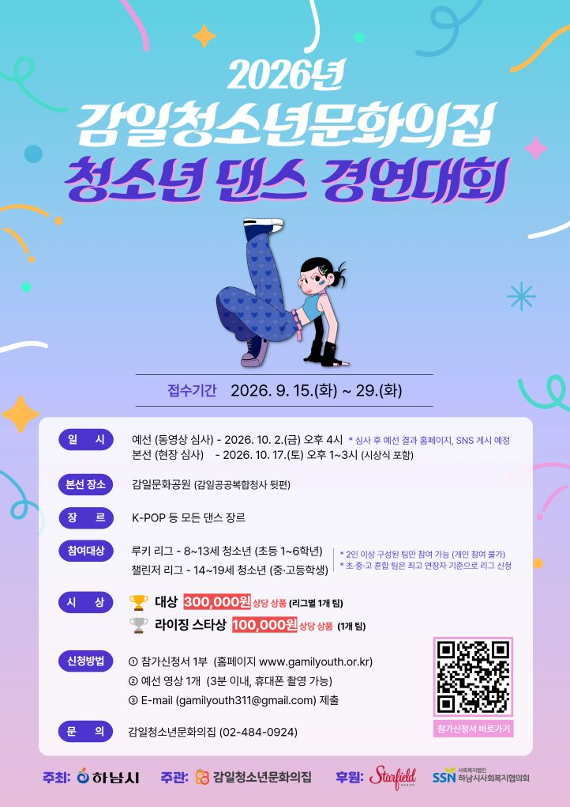

Hanam Inside: Local news, delivered by Lee Kwang-jae
🏙️ KJ's 하남 인사이드
34호 | 2026년 9월 7일 발행
📌 이번 호 주요 목차
🗣️ 우리동네 국회의원 이광재
📰 언론보도
[정치/행정] 이광재 "행정수도 사실상 완성...세종시와 대전은 워싱턴, 서울은 뉴욕 된다"
국회 예결위원장을 맡고 있는 이광재 더불어민주당 의원이 MBC라디오 '김종배의 시선집중'에 출연해 "대통령실과 국회가 세종으로 이전하면서 행정수도가 사실상 완성된다"며 "세종시와 대전은 워싱턴, 서울은 뉴욕과 같은 도시로 발전할 것"이라고 강조했습니다. 이 의원은 61개 기관과 대통령실, 국회가 세종으로 가면서 AI 정부 소프트웨어 산업과 글로벌 교육 산업을 함께 육성해 자족도시로 만들어야 한다고 밝혔습니다.
📌 출처: 폴리뉴스 (백윤호 기자)
📰 언론보도
[정책/금융] 이광재, 금융당국 이전론에 "정책·집행기관 꼭 같이 있을 필요 없어"
이광재 국회 예산결산특별위원장이 공공기관 지방 이전 논의와 관련해 "(금융) 정책을 만드는 곳과 실제 집행하는 곳이 꼭 같을 필요는 없다"고 밝혔습니다. 이 의원은 금융기관의 사적 거래 특성과 글로벌 도시 사례를 들며 업무 연관성 우려를 일축하였고, LH의 택지개발과 주택건설 기능 분리 필요성 및 국가 미래대응기금을 통한 과감한 사람·기술 투자의 중요성을 피력했습니다.
📌 출처: 연합인포맥스 (김성준 기자)
📝 현장일지
[현장일지] "말로만 국민 사랑한다고요? 더 나은 삶 선물해야죠" 포춘코리아 인터뷰
이광재 의원이 포춘코리아(Fortune Korea) 인터뷰를 통해 '국민이 발 뻗고 살 수 있는 나라'를 만드는 것이 정치의 본질이어야 한다는 철학을 밝혔습니다. 국가 재정과 미래 기술 투자, 양질의 일자리 창출과 주거 안정 등 국민의 삶을 실질적으로 개선하기 위한 정책적 비전과 국가 개혁 구상을 제시했습니다.
📌 출처: 이광재 공식 네이버 블로그
📝 현장일지
[현장일지] "기업이 모이는 혁신도시, 대학은 '일자리 발전소'로" 메가성장특위 당정협의회
이광재 의원이 메가성장특별위원회 수석부위원장으로서 첫 당정협의회에 참석했습니다. 공공기관 이전을 넘어 기업 유치와 일자리 창출로 이어지는 혁신도시 고도화 방안을 제안하고, 지역 대학을 기업 및 기술과 연결하는 '일자리 발전소'로 키우며 전국 1~2시간대 초고속 철도망 구축 등 국가 균형발전 전략을 강조했습니다.
📌 출처: 이광재 공식 네이버 블로그
📰 하남 지역 주요 뉴스
📰 행정/재정
하남시 재정 '경고등'… 쓸 수 있는 돈 9.6%, 내년 예산 대수술
경기 하남시가 인건비와 복지비 등 의무적 경비 비율이 90.4%에 달해 시가 자체 운용할 수 있는 가용 재원이 9.6%에 불과한 재정 상황을 타개하기 위해 강도 높은 세출 구조조정에 나섭니다. 시는 업무추진비와 경상경비를 대폭 삭감하고 저성과·불요불급한 사업을 일몰 처리하여 절감한 재원을 민생 안정과 지역 경제 활성화 사업에 집중 투입한다는 방침입니다.
📌 출처: 오마이뉴스 (박정훈 기자)
📰 문화/체육
“뜨거운 10㎞ 끝엔 설레임”…하남 미사경정공원서 3000명 달린 '2026 설레임런' 성황
지난 9월 5일 경기 하남시 미사경정공원에서 롯데웰푸드가 주최한 10km 체감형 스포츠 축제 '2026 설레임런'이 개최되어 전국에서 모인 러너와 시민 3,000여 명이 참가했습니다. 기안84와 다양한 연령대의 참가자들이 미사경정공원 코스를 달리며 스포츠와 지역 힐링 문화를 만끽했습니다.
📌 출처: 이데일리 (김지우 기자)
📰 의정/지역
하남시의회 연구단체, 전주시 전통시장·상점가 활성화 우수 사례 현장 벤치마킹
하남시의회 의원연구단체 '하남시 전통시장·상점가 육성 및 활성화 방안 연구회'가 전북 전주시를 방문해 성공적인 상권 활성화 사례와 소상공인 지원 정책 현장을 둘러보고 하남시 원도심 및 지역 상권 맞춤형 체질 개선 방안을 논의했습니다.
📌 출처: 모닝투데이 (이지훈 기자)
📰 의정/행정
오승철 하남시의회 자치행정위원장 “의회 국외연수 5100만원 반납했는데… 시장 유럽출장, 지금 꼭 필요한가”
하남시의회가 어려운 재정을 고려해 의원 해외 공무국외출장 예산 5,100만 원 전액을 반납한 가운데, 오승철 자치행정위원장이 하남시장의 유럽 출장 및 K-스타월드 벤치마킹 사업 추진에 대해 시기와 우선순위 문제를 제기했습니다. 오 위원장은 세수 부족 등 재정 난국 속 공무국외출장 예산 집행 기준 마련과 적절성 재검토가 필요하다고 강조했습니다.
📌 출처: 서울신문 (명성선 기자)
💬 하남 맘카페 HOT 이슈
2026년 9월 7일 기준 하남 지역 인터넷 커뮤니티에서 가장 화두가 되었던 우리 동네 소식을 모았습니다.
1️⃣ 9월 5일 개최! '2026 하반기 스테이지 하남' 미사호수공원 개막 공연 성황... 미사·감일·위례 맘카페 현장 후기 폭발
현황: 지난 9월 5일(토) 오후 5시 미사호수공원 잔디광장에서 '2026 하반기 스테이지 하남' 개막 공연이 개최되어 피프티피프티, KCM, 밴드 분리수거 등 화려한 라인업과 함께 시민 1만 여 명이 운집하며 대성황을 이뤘습니다.
💡 주민 포인트: 미사호수공원 잔디광장 돗자리 명당 주차/자리잡기 꿀팁, 아이들과 함께 즐긴 K-POP·치어리딩 무대 현장 반응 공유.
💬 주민 반응: "피프티피프티 보려고 아이들과 돗자리 폈는데 너무 즐거웠어요!", "10월 말까지 매주 주말 미사·감일·위례에서 계속된다니 주말 나들이 걱정 없네요" 등 후기 잇따름.
2️⃣ 오늘(9월 7일) 마감! 정부24 앱 '비대면 주민등록 사실조사' 8일부터 통장님 방문 조사 시작 소식에 맘카페 확인 열풍
현황: 9월 7일(월)을 끝으로 정부24 앱을 통한 '2026 비대면 주민등록 사실조사'가 마감되고, 9월 8일(화)부터 통장 및 담당 공무원의 세대 직접 방문 조사가 시작된다는 안내에 따라 신청 확인 글이 집중 게재되었습니다.
💡 주민 포인트: 맞벌이 세대 및 어린 자녀 가구를 위한 비대면 접수 마감일 챙기기, 방문 조사 시간대 정보 공유.
💬 주민 반응: "맞벌이라 오늘(7일) 퇴근길에 앱으로 1분 만에 마쳤어요", "안 하신 분들 통장님 오시기 전에 오늘 꼭 앱으로 신청하세요!" 강추 공유.
3️⃣ 9월 '독서의 달' 맞이 미사·위례·감일 등 9개 도서관 108개 무료 특강 & AI 클래스·도서 대출 2배 확대(10권) 맘카페 추천 활발
현황: 9월 '독서의 달'을 맞아 미사, 위례, 감일, 나룰 등 관내 9개 공공도서관에서 108개 강연, AI 교실, 그림자 연극, 북토크 등 무료 체험과 함께 한 달간 도서 대출 수량이 10권으로 2배 확대 운영되고 있습니다.
💡 주민 포인트: 위례도서관 그림자 연극 및 미사도서관 초등 AI 클래스 선착순 예약 성공 팁, 주말 도서관 가족 나들이 코스 공유.
💬 주민 반응: "9월엔 도서 대출이 10권이라 아이들 읽고 싶었던 책 맘껏 빌려왔어요!", "주말마다 도서관 특강 가니 아이들도 신나하네요" 반응 호평.
🎭 ALL IN 하남라이프
2026년 9월 7일 기준 한눈에 보는 하남시 최신 문화·공연·체험 가이드
🎭 2026.09.19 ~ 09.20 | 축제·행사
[축제/행사] 2026 하남이성산성문화제 『하남의 역사, 미래를 두드리다』 개최 (9월 19일~20일)
"천년의 시간을 깨우는 두드림"
이성산성 출토 최고(最古) 타악기 '요고(腰鼓)'의 울림을 따라 하남의 역사와 오늘, 미래를 연결하는 대축제가 펼쳐집니다.
📅 일시: 2026년 9월 19일(토) ~ 9월 20일(일) (2일간)
📍 장소: [주행사장] 미사호수공원 잔디광장 / [제2행사장] 이성산성 일원
🎤 축하공연: 윤종신, 신유, 비비 (BIBI)
🎈 주요 프로그램: 개막식·주제공연, K-POP 커버 & 참여형 랜덤플레이댄스, 이성산성 역사해설 투어, 유물발굴 체험, 친환경 요고 만들기 등
이성산성 출토 최고(最古) 타악기 '요고(腰鼓)'의 울림을 따라 하남의 역사와 오늘, 미래를 연결하는 대축제가 펼쳐집니다.
📅 일시: 2026년 9월 19일(토) ~ 9월 20일(일) (2일간)
📍 장소: [주행사장] 미사호수공원 잔디광장 / [제2행사장] 이성산성 일원
🎤 축하공연: 윤종신, 신유, 비비 (BIBI)
🎈 주요 프로그램: 개막식·주제공연, K-POP 커버 & 참여형 랜덤플레이댄스, 이성산성 역사해설 투어, 유물발굴 체험, 친환경 요고 만들기 등

📌 출처: 하남문화재단 (하남문화예술회관)
💃 2026.09.04 | 청소년/공연
[모집/청소년] 2026년 감일청소년문화의집 청소년 댄스 경연대회 참가팀 모집
"청소년들의 꿈과 열정을 발산하는 신나는 댄스 무대!"
하남시감일청소년문화의집에서 관내 청소년을 대상으로 '2026년 청소년 댄스 경연대회' 참가팀을 모집합니다.
📅 모집일자: 2026년 9월 4일(금) ~ (상세 일정 공지사항 안내)
📍 장소: 감일청소년문화의집 (감일공공복합청사 3층)
👧 모집대상: 하남시 관내 청소년 댄스 팀 및 참가 희망 청소년
📝 신청방법: 홈페이지 공지사항 내 신청서 양식 작성 후 접수
하남시감일청소년문화의집에서 관내 청소년을 대상으로 '2026년 청소년 댄스 경연대회' 참가팀을 모집합니다.
📅 모집일자: 2026년 9월 4일(금) ~ (상세 일정 공지사항 안내)
📍 장소: 감일청소년문화의집 (감일공공복합청사 3층)
👧 모집대상: 하남시 관내 청소년 댄스 팀 및 참가 희망 청소년
📝 신청방법: 홈페이지 공지사항 내 신청서 양식 작성 후 접수

📌 출처: 하남시감일청소년문화의집
🎨 2026.09.09 | 체험/가족
[체험/가족] 하남역사박물관 9월 문화가 있는 날 『궁중지화_모란 꽃 만들기』 수강생 모집
"전통 한지로 피워내는 아름다운 왕실의 꽃, 모란!"
하남역사박물관 소장품 연계 체험 교육 프로그램으로 전통 한지를 활용해 왕실의 꽃 '모란'을 만들어보는 궁중지화 체험을 진행합니다.
📅 일시: 2026년 9월 9일(수) 16:00 ~ 18:00
📍 장소: 하남역사박물관 교육실
👧 모집대상: 성인, 가족 (아동 1명 + 보호자 1명) / 선착순 20팀 (수강료 팀당 15,000원)
📝 신청방법: 하남역사박물관 홈페이지 온라인 선착순 접수 (9월 1일~8일)
하남역사박물관 소장품 연계 체험 교육 프로그램으로 전통 한지를 활용해 왕실의 꽃 '모란'을 만들어보는 궁중지화 체험을 진행합니다.
📅 일시: 2026년 9월 9일(수) 16:00 ~ 18:00
📍 장소: 하남역사박물관 교육실
👧 모집대상: 성인, 가족 (아동 1명 + 보호자 1명) / 선착순 20팀 (수강료 팀당 15,000원)
📝 신청방법: 하남역사박물관 홈페이지 온라인 선착순 접수 (9월 1일~8일)

📌 출처: 하남문화재단 (하남역사박물관)
🏛️ 공공기관 소식지
🏛️ 하남시청 | 2026.09.03
[하남시청] 2026년 하남시 SNS 숏폼 영상 공모전 『하남 30초 프로젝트 - 내가 담은 하남』 개최
접수기간: 2026.9.7.(월) ~ 10.8.(목) | 응모자격: 하남시민 및 하남시에 관심 있는 누구나
주요내용: 하남시의 매력, 정책, 일상을 담은 30초~60초 숏폼 영상 공모 (총상금 200만 원, 4팀 선정).
문의: 하남시청 홍보담당관
주요내용: 하남시의 매력, 정책, 일상을 담은 30초~60초 숏폼 영상 공모 (총상금 200만 원, 4팀 선정).
문의: 하남시청 홍보담당관
📌 출처: 하남시청 홍보담당관
🏛️ 하남시청 | 2026.09.03
[하남시청] 2026년 4분기 신장1동·위례동·미사동 주민자치센터 교양·문화 강좌 수강생 모집
접수기간: 2026.9.10.(목) ~ 9.14.(월) | 추첨일: 2026.9.15.(화)
주요내용: 4분기 교양·문화·체육·외국어 강좌 수강생 모집 (인터넷 및 방문 접수).
문의: 각 동 주민자치센터
주요내용: 4분기 교양·문화·체육·외국어 강좌 수강생 모집 (인터넷 및 방문 접수).
문의: 각 동 주민자치센터
📌 출처: 하남시 각 동 주민자치센터
🏛️ 하남시청 | 2026.09.03
[하남시청] 2026년 농산물 안정적 공급지원사업 추가모집 공고 (9.3~9.15)
신청기간: 2026.9.3.(목) ~ 9.15.(화) | 대상: 관내 농업인 및 생산자 단체
주요내용: 친환경 농산물 생산·유통 기반 구축을 위한 농자재 및 생산 시설 보조 지원.
문의: 하남시청 식품위생농업과
주요내용: 친환경 농산물 생산·유통 기반 구축을 위한 농자재 및 생산 시설 보조 지원.
문의: 하남시청 식품위생농업과
📌 출처: 하남시청 식품위생농업과